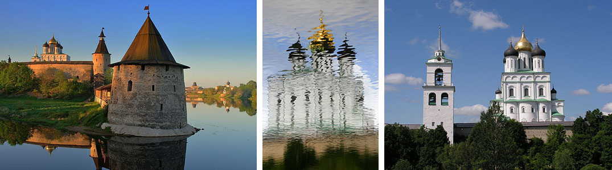
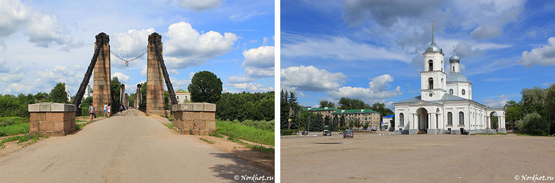
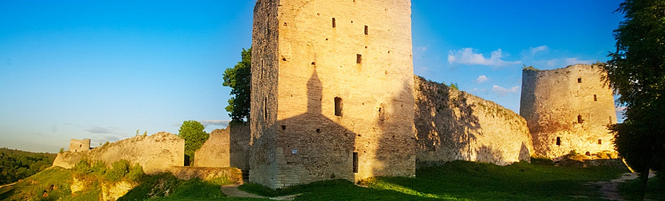
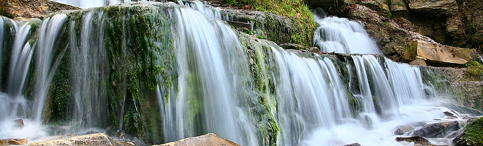
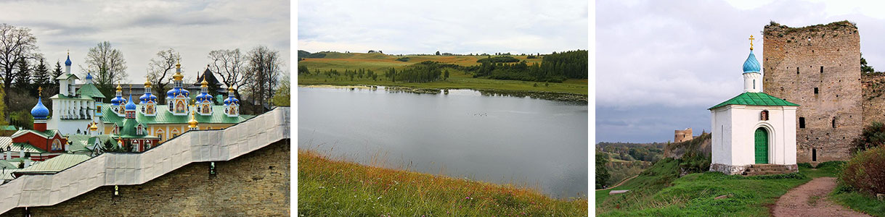

Что первично, курица или яйцо? В самом деле, что первично: красота местности, которая стала источником вдохновения для великого поэта, или творчество поэта, которое заставляет нас смотреть на Пушкинские места другими глазами? Трудно найти ответ на этот вопрос. Но что мы знаем точно, что Пушкиногорье — уникальное место. Уникально оно потому, что здесь пытаются сохранить не только абстрактную память об Александре Сергеевиче, но и ландшафты, деревни. Здесь не построят посреди Михайловского или Тригорского пятиэтажку, не разрешат поставить стильный забор из профлиста. Благодаря этому мы можем увидеть кусок той, старой России. Которая еще не ведала революций, не была сожжена войной. Мы увидим страну такой, как ее видели поэты не серебряного — золотого века!
Не менее интересен и район Изборска. Тут везде седая древность. Где-то здесь, в селе Будятине, родился князь Владимир - будущий киевский правитель, крестивший Русь. Недалеко – Выбуты - место рождения княгини Ольги. Село существует и поныне. Мы посетим Изборск - один из самых старых городов России (упомянут уже в 862 г.), заглянем в Печоры, где располагается знаменитый монастырь.
Мы будем избегать крупных и напряженных шоссе, отдавая предпочтение наименее загруженным транспортом дорогам. Мы не будем торопиться. Мы будем получать удовольствие от езды, купаться в реках и озерах. Посещать музеи и старинные усадьбы. И все это с комфортом: размещение в гостиницах и гостевых домах, машина сопровождения, которая перевозит багаж, гиды... Поехали?
С чего бы у нас маршрут начинается в нулевой день? А вот: москвичи в этот день садятся на поезд Москва — Псков и коротают вечер в поезде. А петербуржцы приезжают в Псков вечером (благо ехать недалеко - 250 км от Петербурга) и размещаются в гостинице. Вечером уже гуляют по Пскову.
 Утром мы встречаем москвичей, совместно завтракаем и переезжаем в Пушкинские горы (около 1,5 часов на автобусе), где у нас намечен старт велосипедной части маршрута.
Это будет насыщенный день! Мы на велосипедах начнем исследовать самое красивое, что есть в Пушкинских местах. Заедем в Михайловское, Тригорское. Поездим по парку, так как большая часть парка открыта для велосипедистов. Посмотрим городище Воронич. Заедем и в Святогорский монастырь, поклонимся Пушкину. На самом деле, это в полной мере ходовой день. Мы успеем накатать около 40 километров!
Утром у нас есть еще шанс досмотреть что-то из того, что было пропущено, и в путь. Нас ждут дорожки Псковской области, которые поведут нас в город Остров. Мы поедем через старинные деревеньки, по берегу реки Великой. Это длинный день, более 70-ти километров. Да, усталость входит в стоимость маршрута :) Впрочем, когда красивая дорога, и ехать легче. Заметная часть пути проходит по грунтовым дорожкам, где совершенно нет машин.
В этот день мы поедем по второстепенным дорожкам через самые-самые старинные русские земли, посетим город Изборск. Кроме старины глубокой, здесь еще сохранились укрепленные районы, построенные до второй мировой войны Советского Союза вдоль старой границы Советского Союза. Это Островский укрепрайон.
А из древности седой, конечно же, Изборск. Некогда это был важный город. В «Повести временных лет» Изборск упоминается наряду с Новгородом, Ладогой и Киевом и таким образом является одним из древнейших поселений северо-западной Руси. По преданию, в 862 году Изборск достался Трувору, младшему брату Рюрика, который стал первым его князем и был похоронен в Изборске. В XIV веке был построена мощная крепость, которая в течение сотни лет ни разу не сдалась постоянным атакам Ливонского ордена. К нашему времени в Изборске, который после реставрации стал очень красив, сохранились замечательные памятники: окруженная мощной каменной стеной Изборская крепость, на территории которой расположен невероятной красоты Никольский собор 14 в. Здесь А.Тарковский снимал свой фильм «Андрей Рублев», Н.Рерих писал свои картины. В Изборске есть и многочисленные часовни XVIII века, а также природные достопримечательности – Словенские ключи и Труворово городище.
В этот день мы поедем по очень красивым дорогам края из Изборска в Печоры и вернемся обратно другой дорогой. Сосновые леса сменяются полями, поля — болотами и вновь лесами. Красиво: холмы, перелески. На таких холмах и стоит Свято-Успенский Псково-Печерский мужской монастырь, основанный в далеком 1473 году. Говоря штампами, «Архитектурная жемчужина края». Белокаменная стена взбирается с холма на холм, а внутри - златоглавые церкви.
Все хорошее рано или поздно заканчивается. Мы едем, минуя трассу, из Изборска в Псков. После обеда петербуржцы, которые успели погулять по Пскову в первый день, уезжают домой, а москвичи гуляют до вечера. Вечером садятся на поезд и уезжают в Москву.
Стоимость маршрута уточняйте на странице КАЛЕНДАРЬ, там же можно подать заявку на участие.
Источники фотографий для оформления страницы: www.pskovgorod.ru, nordhot.ru, www.museum-izborsk.ru, pechori.ru
{/block}